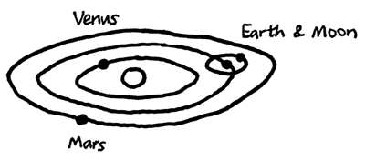
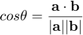
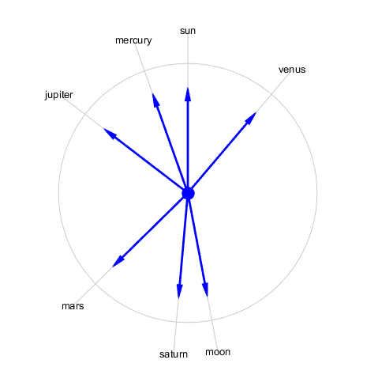

Sky Clock calculations
I look up at the sky just after sunset and I see an especially bright star. It's probably a planet. But which one?
This question gives me a good opportunity to play around with MATLAB. Let's do a visualization that shows where the planets are relative to the earth and the sun. In the process, we'll use JSON services, the File Exchange, MATLAB graphics, and 3-D vector mathematics cribbed from Wikipedia.

Here is the basic grade-school illustration of the solar system, the one that shows the planets rolling around the sun like peas on a plate. For simplicity, we're just showing the sun, the earth, the moon, Venus, and Mars.
But we never see anything like this with our own eyes. Instead, we see bright spots on a dark background somewhere "up there." So let's simplify our problem to determining what direction each naked-eye planet is in. This leads to an image like this.

Our goal is to make an accurate up-to-date version of this diagram. Specifically, relative to the sun, where should we look to find the moon and the naked-eye planets (Mercury, Venus, Mars, Jupiter, and Saturn)? To do this, we need to solve a few problems.
- Find the planets
- Find the unit vector pointing from earth to each planet
- Squash all these vectors onto a single plane
- Visualize the resulting disk
Contents
Where Are the Planets?
First of all, where are the planets? There's a free JSON service for just about everything these days. I found planetary data hosted on Davy Wybiral's site here:
http://davywybiral.blogspot.com/2011/11/planetary-states-api.html
url = 'http://www.astro-phys.com/api/de406/states?bodies=sun,moon,mercury,venus,earth,mars,jupiter,saturn';
json = urlread(url);
Parse the data
Now we can use Joe Hicklin's JSON parser from the File Exchange. It returns a well-bahaved MATLAB structure.
data = JSON.parse(json)
data =
date: 2.4568e+06
results: [1x1 struct]
unit: 'km'
The payload is in the "results" field. Each entry has three position components and three velocity components.
data.results
ans =
mercury: [1x6 double]
sun: [2.3929e+05 -2.6435e+05 -1.3210e+05 818.1578 465.4666 180.9560]
moon: [1x6 double]
jupiter: [1x6 double]
mars: [1x6 double]
earth: [1x6 double]
venus: [1x6 double]
saturn: [1x6 double]
The distances are in kilometers, and I'm not even sure how this representation is oriented relative to the surrounding galaxy. But it doesn't really matter, because all I care about is the relative positions of the bodies in question.
Aerospace Toolbox Ephemeris
Side note: We could also have used the Aerospace Toolbox to get the same information.
[pos,vel] = planetEphemeris(juliandate(now),'Sun','Earth')
Build the Solar System Structure
% List of bodies we care about ssList = {'sun','moon','mercury','venus','earth','mars','jupiter','saturn'}; ss = []; for i = 1:length(ssList) ssObjectName = ssList{i}; ss(i).name = ssObjectName; ssVec = data.results.(ssObjectName); ss(i).position = ssVec(1:3); ss(i).velocity = ssVec(4:6); end
Plot the planets
% Plot in astronomical units au = 149597871; [x,y,z] = sphere; k = 5; cla for i = 1:length(ss) p = ss(i).position/au; surf(x/k+p(1),y/k+p(2),z/k+p(3)) text(p(1),p(2),p(3),[' ' ss(i).name]); hold on end hold off axis equal shading flat light

This is accurate, but not yet very helpful. Let's now calculate the geocentric position vectors of each planet. To do this, we'll put the earth at the center of the system. Copernicus won't mind, because A) he's dead, and B) we admit this reference frame orbits the sun.
We're also going to use another file from the File Exchange. Georg Stillfried's mArrow3 will help us make nice 3-D arrows in space.
clf pEarth = ss(5).position; for i = 1:length(ss) % pe = position relative to earth % (i.e. a vector pointing from earth to body X) pe = ss(i).position - pEarth; % pne = normalized position relative to earth pne = pe/sqrt(dot(pe,pe)); ss(i).pne = pne; mArrow3([0 0 0],pne, ... 'stemWidth',0.01,'FaceColor',[1 0 0]); text(pne(1),pne(2),pne(3),[' ' ss(i).name]); hold on end light hold off axis equal axis off

These are unit vectors pointing out from the center of the earth towards each of the other objects. It's a little hard to see, but these vectors are all lying in approximately the same plane.
If we change our view point to look at the system edge-on, we can see the objects are not quite co-planar. For simplicity, let's squash them all into the same plane. For this, we'll use the plane defined by the earth's position relative to the sun crossed with its velocity vector. This defines "north" for the solar system.
pEarth = ss(5).position; pSun = ss(1).position; vEarth = ss(5).velocity; earthPlaneNormal = cross(vEarth,pSun - pEarth); % Normalize this vector earthPlaneNormalUnit = earthPlaneNormal/sqrt(dot(earthPlaneNormal,earthPlaneNormal)); mArrow3([0 0 0],earthPlaneNormalUnit, ... 'stemWidth',0.01,'FaceColor',[0 0 0]); view(-45,15) a = axis; axis(a/2) set(gca,'Clipping','off')

Now we project the vectors onto the plane defined by earth's motion around the sun. I learned what I needed from Wikipedia here: Vector Projection.
Since we are working with the normal, we are technically doing a vector rejection. Using Wikipedia's notation, this is given by

hold on for i = 1:length(ss) pne = ss(i).pne; pneProj = pne - dot(pne,earthPlaneNormalUnit)/dot(earthPlaneNormalUnit,earthPlaneNormalUnit)*earthPlaneNormalUnit; ss(i).pneProj = pneProj; mArrow3([0 0 0],pneProj, ... 'stemWidth',0.01,'FaceColor',[0 0 1]); text(pneProj(1),pneProj(2),pneProj(3),[' ' ss(i).name]); end hold off axis equal

We're close to the end now. Let's just calculate the angle between the sun and each element. Then we'll place the sun at the 12:00 position of our planar visualization and all the other planets will fall into place around it.
Calculate the angle between the sun and each of the bodies. Again, from the Wikipedia article, we have

sun = ss(1).pneProj; ss(1).theta = 0; for i = 1:length(ss) pneProj = ss(i).pneProj; cosTheta = dot(sun,pneProj)/(sqrt(dot(sun,sun))*sqrt(dot(pneProj,pneProj))); theta = acos(cosTheta); % The earth-plane normal vector sticks out of the plane. We can use it % to determine the orientation of theta x = cross(sun,pneProj); theta = theta*sign(dot(earthPlaneNormalUnit,x)); ss(i).theta = theta; end
Plot the result
cla k1 = 1.5; k2 = 1.2; for i = 1:length(ss) beta = ss(i).theta + pi/2; x = cos(beta); y = sin(beta); mArrow3([0 0 0],[x y 0], ... 'stemWidth',0.01, ... 'FaceColor',[0 0 1]); line([0 k1*x],[0 k1*y],'Color',0.8*[1 1 1]) text(k1*x,k1*y,ss(i).name,'HorizontalAlignment','center') end t = linspace(0,2*pi,100); line(k2*cos(t),k2*sin(t),'Color',0.8*[1 1 1]) line(0,0,1,'Marker','.','MarkerSize',40,'Color',[0 0 1]) axis equal axis(2*[-1 1 -1 1])
And there you have it: an accurate map of where the planets are in the sky for today's date. In this orientation, planets "following" the sun through the sky are on the left side of the circle. So Jupiter will be high in the sky as the sun sets.
And that is a very satisfying answer to my question, by way of vector math, JSON feeds, MATLAB graphics, and the the File Exchange.